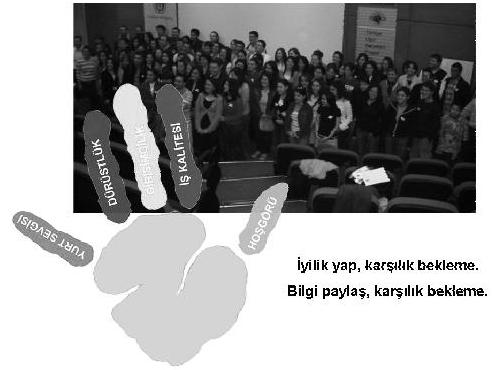

Dumlupınar Meydan Muharebesi'ni kazanır bizimkiler. Fatma Teyze, komutanın karşısına gelir, elinde iki tavuk. "Oğlum ben ‘Dumlupınar'ı geri alan komutana bu iki tavuğu vereceğim' diye ahdetmiştim. Sahip olduğum tek şey bu iki tavuk. Kabul etmezsin diye kesip getirdim" der. Hayrullah Fişek Paşa'nın gözleri dolar, teşekkür eder ve alır tavukları. Tavuk deyip geçmeyin, bir çatışmanın sonunda, Kazım Karabekir emir subayına "Oğlum 24 saattir bir şey yemedik galiba" der. Zabit araya taraya zorlukla bir yumurta bulur. Pişirip yedirirler generale. Bir yumurta daha yoktur.
Komutan tavukları pişirtir. Kazım Karabekir'i, Mustafa Kemal'i ve diğer tüm komutanları akşam yemeğine davet eder. Yemek gelince Atatürk sorar:
– Nereden çıktı bu tavuk?
Anlatırlar durumu. Atatürk yine sorar:
– Asker bugün ne yedi?
– Kavurga[13].
– Alın bu tavukları askere verin, bize kavurga getirin.
Komutanlar hep beraber kavurga yerler.
İşte %8 okuma yazma oranıyla bir devletin, 1923-1948 arası dünyanın en hızlı gelişen iki ekonomisinden birine sahip oluşunun sırrı.
Şu anda inanılmaz büyüyen iki hastane zinciri var, büyük binalar yapıp gelişiyorlar. Bütün sağlık personeli anlatıyor: Bir tanesi, bir bakanın ve bağlı olduğu Menzil Tarikatı'nın; diğer zincirse, çok önemli bir politikacının eşinin. Tabii yasal ortaklar olarak görünmüyorlar. Sağlıkla ilgili çalışanların hepsi bunu biliyor. Anadolu'nun her yerinden insanlar otobüslerle bu iki hastane grubuna taşınıyorlar. Herkese bir değil on tahlil, kontrol, vesaire yapılıyor. Devlet tıkır tıkır bu iki hastane grubunu besliyor. İstediğiniz doktora, hemşireye, eczacıya sorun; bu iki hastanenin ve politikacıların adını size versinler.
Şu anda, 200 devletin 170'i Türküz diye bize vize uyguluyor.
Sağlık Bakanı çıkıp "Domuz gribi aşısı olun, yoksa çok insan ölecek" diyor. Kimse aşı olmuyor.
Acı olan kimsenin aşı olmaması değil.
Acı olan, kimsenin ülkenin sağlık bakanının sözüne inanmaması.
Seni yönetenlere inanç duyamadığın an, böyle dımdızlak kalırsın olduğun yerde.
Konu, bu sağlık bakanı, bu hükümet değil. Bundan on yıl öncekine de, ondan yirmi yıl öncekine de inancımız kalmamıştı.
Seninle beraber aynı yemeği yiyenlere inanırsın.
10-15 yeni makam aracı alındı, tanesi 2 trilyon civarında. Aracın küçücük bir parçası, diyelim ki basınç merkezi arıza yaparsa, Almanya'dan getirtiliyor. Kaç liradır 3 cm boyutunda bir yedek parça, basınç merkezi?
65 bin avro!
İnanmayan sorsun Mercedes'e.
Var mı bu ülkenin böyle bir lüksü?
Şu Hortumlu Dünyada Fil Yalnız Bir Hayvandır adlı kitabımda "Türkiye Odalar ve Borsalar Birliği, Türk Milli Takımı Dünya Kupası finaline çıkarsa oyunculara bir milyon dolar prim verme kararı almış. Ülkenin böyle bir lüksü yok. O parayla yüzlerce gence iş kurdurur, ihracat yaptırırsınız" yazdım diye TOBB yöneticileri küstü bana. Bir daha TOBB eğitim almadı benden ve kurumumdan. Yine yazıyorum, tüm kapılar kapansa gider köylerde, okullarda şimdiki gibi ücretsiz eğitimler veririm; bu fakir ülkede her kuruşu girişimciliğe, iş kalitesine harcamak zorundayız.
Çok sevdiğim bir dostum "Şerif sen sevecen adamsın, kitaplarında ise öfke var, niye?" diye sormuştu.
Öfkem buna işte benim.
Bir yanda işsiz, yoksul, cahil insanlar; öte yanda ülkenin çar çur edilen kaynakları, iş yapmadan oturan sürüyle insan.
Bir yanda da ülkeme katkım olsun diye iyi niyetle koşturmuş, koşturan insancıklar.
Hiç pop müzik dinlemedim ben, hep rock dinledim. İsyan etmeyeceksem niye yazayım ki?
Ben de bilirim: "Bak yapacaksın, başaracaksın, James başardı. Hadi bağır, ‘En büyük benim, süperim' de. California Üniversitesi'nde 1996 yılında yapılan bir araştırma, başaranların çok çalışan insanlar olduğunu gösteriyor. Hedefini yaz, duvara as. Günde yirmi defa tekrarla, başaracaksın. Fark yaratın. Hadi bağır, başar!" demeyi.
İsyan etmeyeceksem tüm bu kitapları niye yazayım ki?
Hakkâri Lisesi son sınıftan her sene 50-60 öğrenci okulu bitiriyor ve PKK'ye katılıyor. Sen onu lisede eğitmiyorsun, sonra dağa vurmaya gidiyorsun.
Ben gittim Mardin'e, Urfa'ya, Batman'a... Eğitimler verdim; okullarda, Çocuk Esirgeme Kurumları'nda... O kadar bilgiye muhtaçlar ve öğrenmeye o kadar istekliler ki anlatamam. Ama onlara yurt sevgisi kazandıracak adamlar, Ankara'da yönetmelikle, müfredatla, dershanelerdeki kapı genişliğiyle uğraşıyorlar, kemerleri göbeklerinin üstünde.
Kırmızı Uğur Böceğimiz Davut Kör, geçen sene Diyarbakır'ın Lice ve Çermik ilçelerine eğitim vermeye gitmişti. Bana bir e-mektup atmış, bakın ne diyor Davutum: "Orada üniversiteye hazırlanan çok zeki ve pırıl pırıl bir öğrenci grubuyla tanıştım. Eğitim verdim, çok olumluydular. Bir yıl sonra aradığımda öğrendim ki örgüt sempatizanı olmuşlar." Bizim elimiz uzaktan azıcık dokundu, ama asıl bu işi yapması gereken adamlar Ankara'da yiyip içip geziyorlar.
Ben öfkeliyim. Arkadaşım doğru söylüyor.
Daha pek çok kurum, şirket beni defterden siler.
Sisteme isyan edip saldırıyorum.
Pazar payım azalır.
Ama kalbim, ruhum büyür belki.
Kendi osuruğundan korkan herkese bir çağrım var:
Sağlam basın toprağın üstüne.
10 yıl, 50 yıl, 100 yıl sonra o toprak basacak nasılsa üstünüze.
Korkmayın az kazanmaktan.
Korkmayın otoriteden.
Sait Faik'in "Hişt" öyküsü vardır.
Burgaz Ada'da geçer hikâye.
Sait Faik durmadan "Hişt" sesi duyar. Nereden geldiğini anlamaz. Sonra "Nereden gelirse gelsin; dağlardan, kuşlardan, denizden, insandan, böcekten, çiçekten... Gelsin de nereden gelirse gelsin! ‘Hişt' sesi gelmedi mi fena. Geldikten sonra yaşasın çiçekler, böcekler, insanoğulları...[14]" Sizin, benim bir "hişt" sesimiz hep olacak.
Aklı fikri kazanmak olan, hırs küpü, ülke sevgisinden yoksun bu adamlarınsa hiç olmayacak.
Hiç olmadı, anneannem, babaannem, babam "Hişt" der bana gökyüzünden; dalarsam refaha, paraya.
Yumuşarsam biraz ve isyan etmezsem bu elli-altmış yıllık pisliğe.
Baba-oğul Çanakkale'de şehit olan Mustafa Dedemler "Hişt" der en azından.
Kimse demezse Uğur Böceklerim der.
Bir gün unutursam isyan etmeyi, siz de kızın bana bilge okurlar: "Hoca girdin politikacıların, medyanın, şirketlerin, tarikatların dümen suyuna, unuttun ölen askeri, aç insanı, eğitimsiz, geri kalmış ülkeyi" diye.
Bir "Hişt" deyin.
Ben de "Hoşt" diyeyim.
Aklınızdan şu geçiyor olabilir: "Çalıştılar, koştular da ne oldu? Kaybolup gitti hepsi." Mustafa Güzelgöz, misal, emekli ettiler adamı, kadrini bilemediler.
DPT'den, zamanında Mustafa Güzelgöz'den kitap alıp okumuş bir köylü çocuğu Dünya Barış Gönüllüleri "İnsanlığa Hizmet Ödülü"ne Mustafa Güzelgöz'ün projesini yollar. Bizimkinin haberi bile yoktur. Arkasında üç eşek, üç katır, iki de at, kar kış dolaşmaktadır köyleri. 77 ülke yarışır. Finale Küba ile Türkiye kalır ve ödülü Türkiye kazanır. 21 Kasım 1963 günü, Mustafa Güzelgöz ödülünü John Fitzgerald Kennedy'nin elinden alır; bir de jip hediye ederler kütüphaneye.
Ya dostum, sıkı bas toprağa.
Nasılsa bir gün toprak basacak her yanına.
Unutma!
Ödülü almasa da olurdu Güzelgöz.
Evlatlarının duyduğu gurur yeter ona.
Secret'çı varsa aranızda anlamaz beni.
Beyoğlu'nda her yerde reklamını gördüm Secret'ın. Girdim bir kitapçıya, arka kapağında şöyle yazıyordu:
"Dünyadaki gelirin %94'ünü nüfusun %1'i paylaşıyor!"
Bir de utanmadan "paylaşıyor" kelimesini kullanmışlar.
Bu nasıl paylaşma, şerefsizler?
Ortaya yemek geliyor, % 94'ünü bir kişi alıyor, geri kalan 99 kişi % 6'sıyla besleniyor. Çoğu da çoluk çocuk.
Siz isyan etmez misiniz buna?
Oysa kitap bu % 1'e girmenin yöntemini anlatıyor.
Ben size "sır"rın ne olduğunu anlatayım.
Mert'e rica ettim, "Sana bazı kelimeler vereceğim, bu kitabın içinde bu kelimelerden kaç tane var, say; bana yolla, kitabı da imha et" dedim.
"İnsanlık", "Dürüstlük", "Efendilik", "İş Ahlakı", "Yardım Etmek", "Hoşgörü", "Saygı", "Hürmet", "Ülke Sevgisi", "Minnettarlık", "İnanmak".
Bu kelimelerin "sır" kitabındaki kullanılma sayısı sıfır. Yani bu kelimeler kitapta yok.
Para kelimesi ise 20 defa geçiyor.
Anladınız mı "sır"rın ne olduğunu.
Paraya tapanlar, size söylüyorum; cebinizden ufak ufak neyiniz varsa alırlar böyle.
Kazanıyorum zannedersiniz.
Üterler sizi, paranızı da ABD'de villalarda çatır çatır yerler çıtırlarla.
Harcadıkça kazanırız zannedersiniz...
Beyoğlu'nun ortasında elinizde kredi kartı borcunuz, Starbucks levhasının altında dımdızlak kalırsınız.
Etrafa avatar avatar bakarsınız.
"Ulan verdik bez ayakkabıya 139.95 lira. Ödedik on kuruşluk kahveye 7.95 lira. Verdik tişörte 79.95, ödeyemiyoruz şimdi iş yerinin dandik maaşıyla kredi kartının borcunu" dersiniz.
Uğur Böcekleri Projesi nasıl başladı?
Bir gün Anadolu'nun bir köyünden geçiyorum. Bir ev, camı kırılmış. Siyah battal boy çöp poşetiyle kapatmışlar camı.
Evin önünde yamalı şalvarlı, pırıl pırıl gözleri olan küçücük bir kız çocuğu.
Aradan bir yıl geçti, o köyün oradan geçiyorum. Kalbim küt küt vurmaya başladı.
"Allah'ım, inşallah taktırmışlardır camı."
Bir baktım, simsiyah poşet duruyor camda.
"Ya o kızcağızın odasıysa" dedim.
Bir yıldır odasına ışık girmiyor.
Bir yıldır odasından dışarıyı göremiyor.
Ankara'ya dönünce önce arkadaşlarımı tek tek ikna ettim. Sonra beraber inandık. Başladık koşmaya. Türkiye Uğur Böcekleri Projesi bu yüzden başladı.

O küçük kızın odasına ışık girsin diye.
Uğur Böcekleri'nin formülü şu:
Önce eğitici eğitimi alıyorlar. Sonra sarı uğur böceği olarak başlıyorlar çalışmaya.
100 kişiyi eğiten törenle turuncu uğur böceği oluyor.
500 kişiyi eğiten törenle kırmızı uğur böceği oluyor.
1000 kişiyi eğiten törenle bordo uğur böceği oluyor.
Yeşiller eğitmen değil, lojistik destek veriyorlar; kitap toplayıp, ağaç dikiyorlar.
Maviler benim gibi profesyoneller. Biz de okullarda, çocuk esirgeme kurumlarında, cezaevlerinde ücretsiz eğitimler veriyoruz.
Beyazlar, ufaklıklar; onların da iyilik yapmak, okumak üzerine görev tanımları var.
Bugüne kadar 100.000'i aşkın kişiye ücretsiz eğitim verdik.
"Girişimci ol, işini kaliteli yap, dürüst ol, ülkene katkın olsun."
İki tane değerimiz var: "yurt sevgisi" ve "hoşgörü".
Bayrağımızı sevmeyi, inançlara ve etnik kökenlere sevgi ve saygı duymayı anlatıyoruz.
100.000 kişiye ulaştık, daha da fazlasına ulaşacağız.
Siz de bize www.ugurbocekleri.org'tan ulaşabilirsiniz.
Projenin Saros Vakfı'ndan, AB'den falan finansmanı yok.
İzgören&Akın ve Elma karşılıyorlar karınca kararınca.
Politika, siyaset ve paranın projeye hiç girmeyeceğine emin olun.
Uğur Böcekleri, geleceğin şahane eğitmenleri, bizim yerimize hazırlanıyorlar.
En önemli özellikleri ise, pelerinlerini kendileri bağlıyorlar.
Yerim sizin o gülümseyen yanaklarınızı ben.
Teyzemlerin değil, sizin, sizin.
Böyle de kitap mı bitirilir diyorsun ya.
Bitti işte.
Bal gibi.
Mmmhhhh.
10.01.2010
Gecenin 4.50'si.
Ankara.
Mutfak.
Zencefilli kurabiye kırıntıları, cennet elması, kar.
Mmmhhhh...